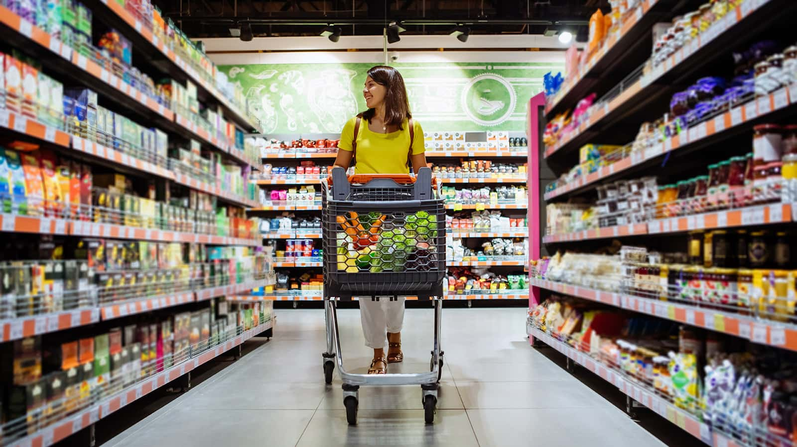

Grocery shopping is a regular activity that involves selecting and purchasing
food and household items, often guided by a list or budget to meet daily or weekly
needs. It can be a practical way to plan meals, save money by choosing seasonal or
discounted products, and explore new ingredients for cooking. Whether done at a
supermarket, local market, or online, it plays a key role in maintaining a healthy
and organized lifestyle.
Fresh finds, full cart, and a step closer to delicious meals!

Go back to the main page (Favourite Things)